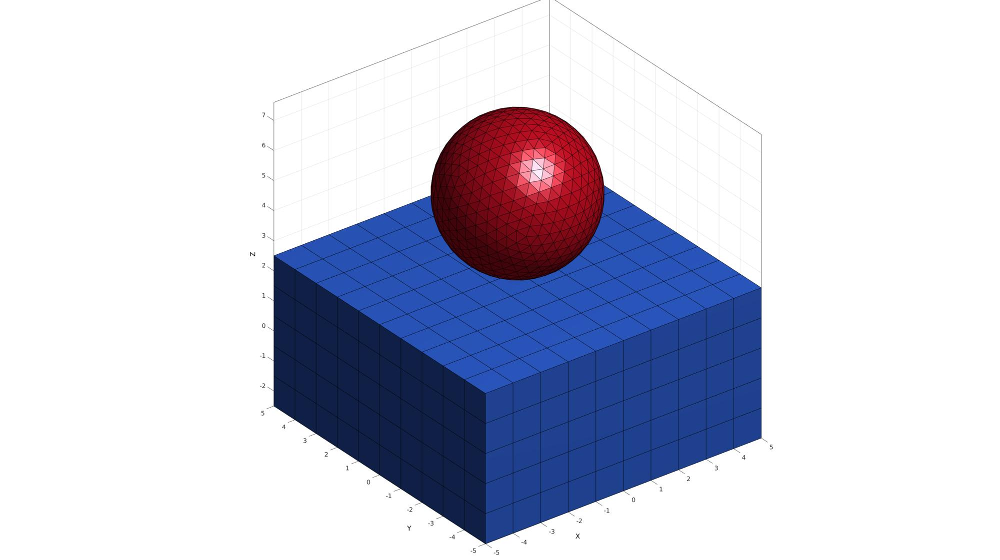

import_FEB
Below is a demonstration of the features of the import_FEB function
Contents
clear; close all; clc;
Plot settings
fontSize=15; cMap=gjet(250);
Importing a FEB file
Set main folder
defaultFolder = fileparts(fileparts(mfilename('fullpath'))); pathName=fullfile(defaultFolder,'data','FEB');
Select test file
testCase=2; switch testCase case 1 febFileNamePart='tempModel_2p0.feb'; %febio_spec 2.0 case 2 febFileNamePart='tempModel_3p0.feb'; %febio_spec 3.0 end febFileName=fullfile(pathName,febFileNamePart);
Import FEB file
[febXML,nodeStruct,elementCell]=import_FEB(febFileName);
--- import_FEB --- IMPORTING .FEB XML ---> Getting nodes -----> Imported 1398 nodes ---> Getting elements -----> Imported 500 hex8 elements -----> Imported 1280 tri3 elements DONE!
The output is an XML object for the feb file, a structure containing the nodal information and a structure containing the element descriptions. The content for the import variables is shown below.
The node structure contains two fields, i.e. one containing nodal coordinates and one containing node indices. The latter should strictly be a monotonically increasing and ordered list so may not be required but is provided here just in case the list is not ordered.
nodeStruct
nodeStruct =
struct with fields:
N: [1398×3 double]
N_ind: [1398×1 double]
The element cell output contains structures for each element set in the model. Element sets are groups of elements with the same material index and the same element type. The structures contain a the element type, the material index, the element matrix (containing the nodal indices), and the element indices.
elementCell{:}
V=nodeStruct.N;
ans =
struct with fields:
E_type: 'hex8'
E_part: 'Part1'
E: [500×8 double]
E_ind: [500×1 double]
ans =
struct with fields:
E_type: 'tri3'
E_part: 'Part2'
E: [1280×3 double]
E_ind: [1280×1 double]
Plotting model
% Plotting the example model surfaces cFigure; hold on; title('The imported model','FontSize',fontSize); for q=1:1:numel(elementCell) E=elementCell{q}.E; elementType=elementCell{q}.E_type; C=q.*ones(size(E,1),1); [F,CF]=element2patch(E,C,elementType); gpatch(F,V,CF); end axisGeom(gca,fontSize); colormap(cMap); camlight headlight; drawnow;

GIBBON www.gibboncode.org
Kevin Mattheus Moerman, gibbon.toolbox@gmail.com
GIBBON footer text
License: https://github.com/gibbonCode/GIBBON/blob/master/LICENSE
GIBBON: The Geometry and Image-based Bioengineering add-On. A toolbox for image segmentation, image-based modeling, meshing, and finite element analysis.
Copyright (C) 2006-2021 Kevin Mattheus Moerman and the GIBBON contributors
This program is free software: you can redistribute it and/or modify it under the terms of the GNU General Public License as published by the Free Software Foundation, either version 3 of the License, or (at your option) any later version.
This program is distributed in the hope that it will be useful, but WITHOUT ANY WARRANTY; without even the implied warranty of MERCHANTABILITY or FITNESS FOR A PARTICULAR PURPOSE. See the GNU General Public License for more details.
You should have received a copy of the GNU General Public License along with this program. If not, see http://www.gnu.org/licenses/.